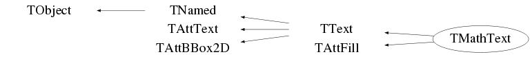

class TMathText: public TText, public TAttFill
TMathText : to draw TeX Mathematical Formula
The following example demonstrate how to use TMathText:
The list of all available symbols is given in the following example:
Function Members (Methods)
public:
| TMathText() | |
| TMathText(const TMathText& text) | |
| TMathText(Double_t x, Double_t y, const char* text) | |
| virtual | ~TMathText() |
| void | TObject::AbstractMethod(const char* method) const |
| virtual void | TObject::AppendPad(Option_t* option = "") |
| virtual void | TObject::Browse(TBrowser* b) |
| static TClass* | Class() |
| virtual const char* | TObject::ClassName() const |
| virtual void | TNamed::Clear(Option_t* option = "") |
| virtual TObject* | TNamed::Clone(const char* newname = "") const |
| virtual Int_t | TNamed::Compare(const TObject* obj) const |
| virtual void | Copy(TObject& text) const |
| virtual void | TObject::Delete(Option_t* option = "")MENU |
| virtual Int_t | TText::DistancetoPrimitive(Int_t px, Int_t py) |
| virtual void | TObject::Draw(Option_t* option = "") |
| virtual void | TObject::DrawClass() constMENU |
| virtual TObject* | TObject::DrawClone(Option_t* option = "") constMENU |
| TMathText* | DrawMathText(Double_t x, Double_t y, const char* text) |
| virtual TText* | TText::DrawText(Double_t x, Double_t y, const char* text) |
| virtual TText* | TText::DrawText(Double_t x, Double_t y, const wchar_t* text) |
| virtual TText* | TText::DrawTextNDC(Double_t x, Double_t y, const char* text) |
| virtual TText* | TText::DrawTextNDC(Double_t x, Double_t y, const wchar_t* text) |
| virtual void | TObject::Dump() constMENU |
| virtual void | TObject::Error(const char* method, const char* msgfmt) const |
| virtual void | TObject::Execute(const char* method, const char* params, Int_t* error = 0) |
| virtual void | TObject::Execute(TMethod* method, TObjArray* params, Int_t* error = 0) |
| virtual void | TText::ExecuteEvent(Int_t event, Int_t px, Int_t py) |
| virtual void | TObject::Fatal(const char* method, const char* msgfmt) const |
| virtual void | TNamed::FillBuffer(char*& buffer) |
| virtual TObject* | TObject::FindObject(const char* name) const |
| virtual TObject* | TObject::FindObject(const TObject* obj) const |
| virtual Rectangle_t | TText::GetBBox() |
| virtual TPoint | TText::GetBBoxCenter() |
| virtual void | GetBoundingBox(UInt_t& w, UInt_t& h, Bool_t angle = kFALSE) |
| virtual void | TText::GetControlBox(Int_t x, Int_t y, Double_t theta, Int_t* cBoxX, Int_t* cBoxY) |
| virtual Option_t* | TObject::GetDrawOption() const |
| static Long_t | TObject::GetDtorOnly() |
| virtual Color_t | TAttFill::GetFillColor() const |
| virtual Style_t | TAttFill::GetFillStyle() const |
| virtual const char* | TObject::GetIconName() const |
| virtual const char* | TNamed::GetName() const |
| virtual char* | TObject::GetObjectInfo(Int_t px, Int_t py) const |
| static Bool_t | TObject::GetObjectStat() |
| virtual Option_t* | TObject::GetOption() const |
| virtual void | TText::GetTextAdvance(UInt_t& a, const char* text, const Bool_t kern = kTRUE) const |
| virtual Short_t | TAttText::GetTextAlign() const |
| virtual Float_t | TAttText::GetTextAngle() const |
| virtual void | TText::GetTextAscentDescent(UInt_t& a, UInt_t& d, const char* text) const |
| virtual void | TText::GetTextAscentDescent(UInt_t& a, UInt_t& d, const wchar_t* text) const |
| virtual Color_t | TAttText::GetTextColor() const |
| virtual void | TText::GetTextExtent(UInt_t& w, UInt_t& h, const char* text) const |
| virtual void | TText::GetTextExtent(UInt_t& w, UInt_t& h, const wchar_t* text) const |
| virtual Font_t | TAttText::GetTextFont() const |
| virtual Float_t | TAttText::GetTextSize() const |
| virtual const char* | TNamed::GetTitle() const |
| virtual UInt_t | TObject::GetUniqueID() const |
| const void* | TText::GetWcsTitle() const |
| Double_t | TText::GetX() const |
| Double_t | GetXsize() |
| Double_t | TText::GetY() const |
| Double_t | GetYsize() |
| virtual Bool_t | TObject::HandleTimer(TTimer* timer) |
| virtual ULong_t | TNamed::Hash() const |
| virtual void | TObject::Info(const char* method, const char* msgfmt) const |
| virtual Bool_t | TObject::InheritsFrom(const char* classname) const |
| virtual Bool_t | TObject::InheritsFrom(const TClass* cl) const |
| virtual void | TObject::Inspect() constMENU |
| void | TObject::InvertBit(UInt_t f) |
| virtual TClass* | IsA() const |
| virtual Bool_t | TObject::IsEqual(const TObject* obj) const |
| virtual Bool_t | TObject::IsFolder() const |
| Bool_t | TObject::IsOnHeap() const |
| virtual Bool_t | TNamed::IsSortable() const |
| virtual Bool_t | TAttFill::IsTransparent() const |
| Bool_t | TObject::IsZombie() const |
| virtual void | TText::ls(Option_t* option = "") const |
| void | TObject::MayNotUse(const char* method) const |
| virtual void | TAttText::Modify() |
| virtual Bool_t | TObject::Notify() |
| void | TObject::Obsolete(const char* method, const char* asOfVers, const char* removedFromVers) const |
| static void | TObject::operator delete(void* ptr) |
| static void | TObject::operator delete(void* ptr, void* vp) |
| static void | TObject::operator delete[](void* ptr) |
| static void | TObject::operator delete[](void* ptr, void* vp) |
| void* | TObject::operator new(size_t sz) |
| void* | TObject::operator new(size_t sz, void* vp) |
| void* | TObject::operator new[](size_t sz) |
| void* | TObject::operator new[](size_t sz, void* vp) |
| virtual void | Paint(Option_t* option = "") |
| virtual void | TText::PaintControlBox(Int_t x, Int_t y, Double_t theta) |
| virtual void | PaintMathText(Double_t x, Double_t y, Double_t angle, Double_t size, const char* text) |
| virtual void | TText::PaintText(Double_t x, Double_t y, const char* text) |
| virtual void | TText::PaintText(Double_t x, Double_t y, const wchar_t* text) |
| virtual void | TText::PaintTextNDC(Double_t u, Double_t v, const char* text) |
| virtual void | TText::PaintTextNDC(Double_t u, Double_t v, const wchar_t* text) |
| virtual void | TObject::Pop() |
| virtual void | TText::Print(Option_t* option = "") const |
| virtual Int_t | TObject::Read(const char* name) |
| virtual void | TObject::RecursiveRemove(TObject* obj) |
| virtual void | TAttFill::ResetAttFill(Option_t* option = "") |
| virtual void | TAttText::ResetAttText(Option_t* toption = "") |
| void | TObject::ResetBit(UInt_t f) |
| virtual void | TObject::SaveAs(const char* filename = "", Option_t* option = "") constMENU |
| virtual void | TAttFill::SaveFillAttributes(basic_ostream<char,char_traits<char> >& out, const char* name, Int_t coldef = 1, Int_t stydef = 1001) |
| virtual void | SavePrimitive(ostream& out, Option_t* option = "") |
| virtual void | TAttText::SaveTextAttributes(basic_ostream<char,char_traits<char> >& out, const char* name, Int_t alidef = 12, Float_t angdef = 0, Int_t coldef = 1, Int_t fondef = 61, Float_t sizdef = 1) |
| virtual void | TText::SetBBoxCenter(const TPoint& p) |
| virtual void | TText::SetBBoxCenterX(const Int_t x) |
| virtual void | TText::SetBBoxCenterY(const Int_t y) |
| virtual void | TText::SetBBoxX1(const Int_t x) |
| virtual void | TText::SetBBoxX2(const Int_t x) |
| virtual void | TText::SetBBoxY1(const Int_t y) |
| virtual void | TText::SetBBoxY2(const Int_t y) |
| void | TObject::SetBit(UInt_t f) |
| void | TObject::SetBit(UInt_t f, Bool_t set) |
| virtual void | TObject::SetDrawOption(Option_t* option = "")MENU |
| static void | TObject::SetDtorOnly(void* obj) |
| virtual void | TAttFill::SetFillAttributes()MENU |
| virtual void | TAttFill::SetFillColor(Color_t fcolor) |
| virtual void | TAttFill::SetFillColorAlpha(Color_t fcolor, Float_t falpha) |
| virtual void | TAttFill::SetFillStyle(Style_t fstyle) |
| virtual void | TText::SetMbTitle(const wchar_t* title = L"")MENU |
| virtual void | TNamed::SetName(const char* name)MENU |
| virtual void | TNamed::SetNameTitle(const char* name, const char* title) |
| virtual void | TText::SetNDC(Bool_t isNDC = kTRUE) |
| static void | TObject::SetObjectStat(Bool_t stat) |
| virtual void | TText::SetText(Double_t x, Double_t y, const char* text)MENU |
| virtual void | TText::SetText(Double_t x, Double_t y, const wchar_t* text) |
| virtual void | TAttText::SetTextAlign(Short_t align = 11) |
| virtual void | TAttText::SetTextAngle(Float_t tangle = 0)MENU |
| virtual void | TAttText::SetTextAttributes()MENU |
| virtual void | TAttText::SetTextColor(Color_t tcolor = 1) |
| virtual void | TAttText::SetTextColorAlpha(Color_t tcolor, Float_t talpha) |
| virtual void | TAttText::SetTextFont(Font_t tfont = 62) |
| virtual void | TAttText::SetTextSize(Float_t tsize = 1) |
| virtual void | TAttText::SetTextSizePixels(Int_t npixels) |
| virtual void | TNamed::SetTitle(const char* title = "")MENU |
| virtual void | TObject::SetUniqueID(UInt_t uid) |
| virtual void | TText::SetX(Double_t x)MENU |
| virtual void | TText::SetY(Double_t y)MENU |
| virtual void | ShowMembers(TMemberInspector&) |
| virtual Int_t | TNamed::Sizeof() const |
| virtual void | Streamer(TBuffer&) |
| void | StreamerNVirtual(TBuffer& ClassDef_StreamerNVirtual_b) |
| virtual void | TObject::SysError(const char* method, const char* msgfmt) const |
| Bool_t | TObject::TestBit(UInt_t f) const |
| Int_t | TObject::TestBits(UInt_t f) const |
| virtual void | TObject::UseCurrentStyle() |
| virtual void | TObject::Warning(const char* method, const char* msgfmt) const |
| virtual Int_t | TObject::Write(const char* name = 0, Int_t option = 0, Int_t bufsize = 0) |
| virtual Int_t | TObject::Write(const char* name = 0, Int_t option = 0, Int_t bufsize = 0) const |
protected:
| virtual void | TObject::DoError(int level, const char* location, const char* fmt, va_list va) const |
| void | GetAlignPoint(Double_t& x0, Double_t& y0, const Double_t size, const Double_t angle, const Char_t* t, const Int_t length, const Short_t align) |
| void | GetSize(Double_t& x0, Double_t& y0, Double_t& x1, Double_t& y1, const Double_t size, const Double_t angle, const Char_t* t, const Int_t length) |
| void | TObject::MakeZombie() |
| TMathText& | operator=(const TMathText&) |
| void | Render(const Double_t x, const Double_t y, const Double_t size, const Double_t angle, const Char_t* t, const Int_t length) |
Data Members
public:
| enum { | kTextNDC | |
| }; | ||
| enum TText::[unnamed] { | kTextNDC | |
| }; | ||
| enum TObject::EStatusBits { | kCanDelete | |
| kMustCleanup | ||
| kObjInCanvas | ||
| kIsReferenced | ||
| kHasUUID | ||
| kCannotPick | ||
| kNoContextMenu | ||
| kInvalidObject | ||
| }; | ||
| enum TObject::[unnamed] { | kIsOnHeap | |
| kNotDeleted | ||
| kZombie | ||
| kBitMask | ||
| kSingleKey | ||
| kOverwrite | ||
| kWriteDelete | ||
| }; |
protected:
| Color_t | TAttFill::fFillColor | fill area color |
| Style_t | TAttFill::fFillStyle | fill area style |
| TString | TNamed::fName | object identifier |
| void* | fRenderer | !TMathText Painter |
| Short_t | TAttText::fTextAlign | Text alignment |
| Float_t | TAttText::fTextAngle | Text angle |
| Color_t | TAttText::fTextColor | Text color index |
| Font_t | TAttText::fTextFont | Text font number |
| Float_t | TAttText::fTextSize | Text size |
| TString | TNamed::fTitle | object title |
| void* | TText::fWcsTitle | !Used by TMathText |
| Double_t | TText::fX | X position of text (left,center,etc..) |
| Double_t | TText::fY | Y position of text (left,center,etc..) |
Class Charts



Function documentation
TMathText * DrawMathText(Double_t x, Double_t y, const char* text)
Make a copy of this object with the new parameters and copy object attributes.
void PaintMathText(Double_t x, Double_t y, Double_t angle, Double_t size, const char* text)
void SavePrimitive(ostream& out, Option_t* option = "")
Save primitive as a C++ statement(s) on output stream out
void Render(const Double_t x, const Double_t y, const Double_t size, const Double_t angle, const Char_t* t, const Int_t length)
void GetAlignPoint(Double_t& x0, Double_t& y0, const Double_t size, const Double_t angle, const Char_t* t, const Int_t length, const Short_t align)